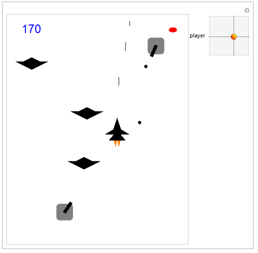

Wolfram Mathematica is a symbolic computing system. However, it supports graphics rendering very well. So I just tried to use the Graphics[ ] and Manipulate[ ] functions as a main loop to update the display as a video game!
You can download the .nb file from here or copy and paste the following code in Wolfram Mathematica. If you found unsupported syntax, please update your Mathematica to version 9.0 or above.
(* 0.Shift+Enter to run all four following sections. Restart: re-run section 4. Change difficulty: section 3.1 *)
(* 1.Graphics Models *)
modelPlayer[p_] := {Polygon[{{{-1.5, 0}, {1.5, 0}, {0, 0.9}}, {{-0.5, 0.5}, {0.5, 0.5}, {0, 2}}, {{-1, -0.7}, {1, -0.7}, {0, 0.5}}} + Table[p, 3, 3]],
Orange, Polygon[{{{-0.4, -0.7}, {0, -0.7}, {-0.2, -1.5}}, {{0.4, -0.7}, {0, -0.7}, {0.2, -1.5}}} + Table[p, 2, 3]]}
modelBullet[p_] := Line[{p + {0, -0.5}, p + {0, 0.5}}]
modelPlane[p_] := Polygon[{{-2, 0}, {0, -1}, {2, 0}, {1, 0}, {0, 0.5}, {-1, 0}} + Table[p, 6]]
modelTank[p_, dir_] := {Gray, Rectangle[p + {-1, -1}, p + {1, 1}, RoundingRadius -> 0.4],
Black, Rotate[Rectangle[p + {-0.1, -0.2}, p + {1.4, 0.2}], Arg[dir[[1]] + dir[[2]] I], p]}
modelTankBullet[p_] := Disk[p, 0.2]
modelExplosion[p_] := Circle[p, 2]
modelLife[p_] := Disk[p, {0.5, 0.3}]
(* 2.Game Elements Update and Simple Collision Detection *)
refreshBullets[player_, bullets_] := Select[Append[bullets, player + {0, 1}], #[[2]] < ScreenSize[[2, 2]] + 1 &]
refreshPlanes[planes_, missing_] := {Select[Append[planes, {RandomReal[ScreenSize[[1]] - {-2, 2}], ScreenSize[[2, 2]] + 1}],
#[[2]] >= ScreenSize[[2, 1]] - 1 &],
missing + Length[Select[planes, #[[2]] < ScreenSize[[2, 1]] - 1 &]]}
collisionPlane[player_, bullets_, planes_, explosions_, score_, lives_] := Module[{hit, crash},
hit = Select[planes, Min[Table[Norm[# - b], {b, bullets}]] <= 1.5 &];
crash = Select[planes, Norm[# - player] <= 2 &];
{
Select[bullets, Min[Table[Norm[# - p], {p, planes}]] > 1.5 &],
Complement[planes, hit, crash],
Union[explosions, hit, crash],
score + 5 Length[crash] + 10 Length[Complement[hit, crash]],
lives - Length[crash]
}
]
refreshTanks[tanks_] := Select[Append[tanks, {{RandomReal[ScreenSize[[1]] - {-2, 2}], ScreenSize[[2, 2]] + 1}, 5}], #[[1, 2]] > ScreenSize[[2, 1]] - 1 &]
refreshTankBullets[player_, tanks_, tankBullets_] := Select[Join[tankBullets,
Table[{tank + 1.5 (player - tank)/Norm[player - tank], (player - tank)/Norm[player - tank]},
{tank, Select[tanks[[All, 1]], #[[2]] > player[[2]] &]}]],
ScreenSize[[1, 1]] <= #[[1, 1]] <= ScreenSize[[1, 2]] && ScreenSize[[2, 1]] <= #[[1, 2]] <= ScreenSize[[2, 2]] &]
collisionTank[player_, bullets_, tanks_, tankBullets_, explosions_, score_, lives_] := Module[{hitTank, deadTank, hitPlayer, crash, updatedTanks},
updatedTanks = tanks;
(* Destroy a tank! *)
hitTank = Select[Range[Length[tanks]], Min[Table[Norm[tanks[[#, 1]] - b], {b, bullets}]] <= 1.5 &];
updatedTanks[[hitTank, 2]] -= Table[1, Length[hitTank]];
deadTank = Select[updatedTanks, #[[2]] <= 0 &];
(* Hit by a tank *)
hitPlayer = Select[tankBullets, Norm[#[[1]] - player] <= 2 &];
(* Crash with a tank *)
crash = Select[updatedTanks, Norm[#[[1]] - player] <= 2 &];
{
Select[bullets, Min[Table[Norm[# - tk[[1]]], {tk, tanks}]] > 1.5 &],
Complement[updatedTanks, deadTank, crash],
Complement[tankBullets, hitPlayer],
Union[explosions, deadTank[[All, 1]], crash[[All, 1]]],
score + 50 Length[deadTank] + 20 Length[Complement[crash, deadTank]],
lives - Length[hitPlayer] - Length[crash]
}
]
(* 3.Game Settings *)
(** Difficulty **)
GameSpeed = 0.2; MaxLives = 3; MaxMissing = 3;
(** Cool down of new enemy and player's machine gun **)
PlayerShootingCD = 10; PlaneCD = 30; TankCD = 300; TankBulletCD = 50;
(** Game constants **)
CollisionDetectionCD = 5; ScreenSize = {{-10, 10}, {-2, 24}}; ScoreStep = 200; Acceleration = 0.0;
(* 4.Run *)
time = 0; score = 0; missing = 0; lives = MaxLives;
bullets = {}; planes = {}; tanks = {}; tankBullets = {}; explosions = {};
Manipulate[
If[lives > 0 && missing <= MaxMissing,
time++;
explosions = {};
(* Player's firing *)
If[0 == Mod[time, PlayerShootingCD],
bullets = refreshBullets[player, bullets]];
(* Interaction with planes *)
If[0 == Mod[time, PlaneCD],
{planes, missing} = refreshPlanes[planes, missing]];
If[0 == Mod[time, CollisionDetectionCD],
{bullets, planes, explosions, score, lives} = collisionPlane[player, bullets, planes, explosions, score, lives];];
(* Interaction with tanks *)
If[0 == Mod[time, TankCD],
tanks = refreshTanks[tanks]];
If[0 == Mod[time, TankBulletCD],
tankBullets = refreshTankBullets[player, tanks, tankBullets];];
If[0 == Mod[time, CollisionDetectionCD],
{bullets, tanks, tankBullets, explosions, score, lives} = collisionTank[player, bullets, tanks, tankBullets, explosions, score, lives]];
(* Update display *)
v = GameSpeed*(1 + Acceleration)^Floor[score/ScoreStep];
planes += Table[{0, -v}, {Length[planes]}];
bullets += Table[{0, 3 v}, {Length[bullets]}];
tanks[[All, 1]] += Table[{0, -v/3}, {Length[tanks]}];
tankBullets[[All, 1]] += Table[v*dir, {dir, tankBullets[[All, 2]]}];
(* Game Display *)
shapes = Join[Map[modelPlane, planes], Map[modelBullet, bullets],
Table[modelTank[tk[[1]], player - tk[[1]]], {tk, tanks}],
Table[modelTankBullet[tb[[1]]], {tb, tankBullets}],
Table[modelExplosion[ep], {ep, explosions}], {modelPlayer[player],Red},
Table[modelLife[{ScreenSize[[1, 2]] + 1 - 2 l, ScreenSize[[2, 2]] - 1}], {l, lives}]];
scoreDisplay = {Blue, Text[Style[score, FontSize -> 24], {ScreenSize[[1, 1]] + 2, ScreenSize[[2, 2]] - 1}, Background -> Transparent]};
Graphics[Join[shapes, scoreDisplay], Axes -> False, PlotRange -> ScreenSize],
(* Game Over *)
Graphics[{Black, Rectangle[ScreenSize[[All, 1]], ScreenSize[[All, 2]]],
Text[Style[" Game Over! ", FontSize -> 36], {Mean[ScreenSize[[1]]], {1/3, 2/3}.ScreenSize[[2]]}, Background -> White],
Text[Style[" Score: ", FontSize -> 24], {Mean[ScreenSize[[1]]], {1/2, 1/2}.ScreenSize[[2]]}, Background -> White],
Text[Style[score, Blue, FontSize -> 24], {Mean[ScreenSize[[1]]], {2/3, 1/3}.ScreenSize[[2]]}, Background -> White]},
Axes -> False, PlotRange -> ScreenSize]
],
{player, {ScreenSize[[1, 1]] + 1.5, ScreenSize[[2, 1]] + 2}, {ScreenSize[[1, 2]] - 1.5, ScreenSize[[2, 2]] - 2}}, ControlPlacement -> Right]